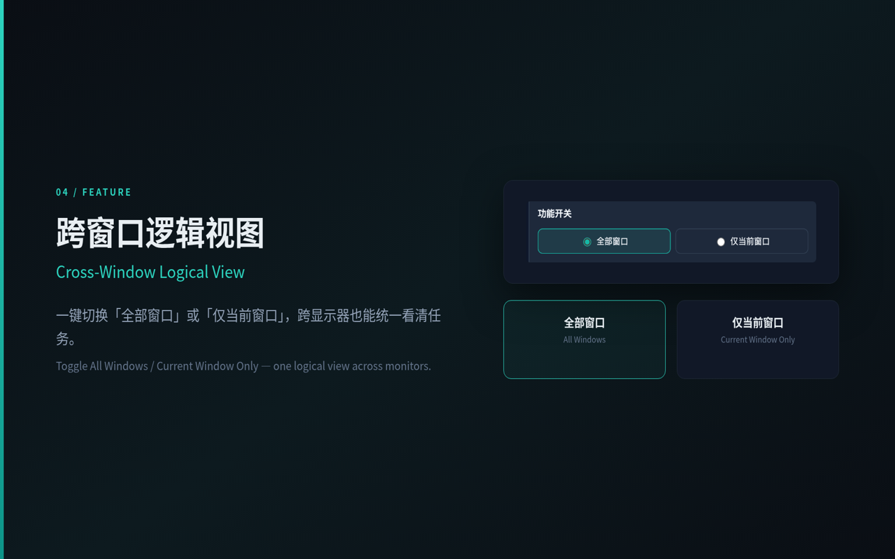
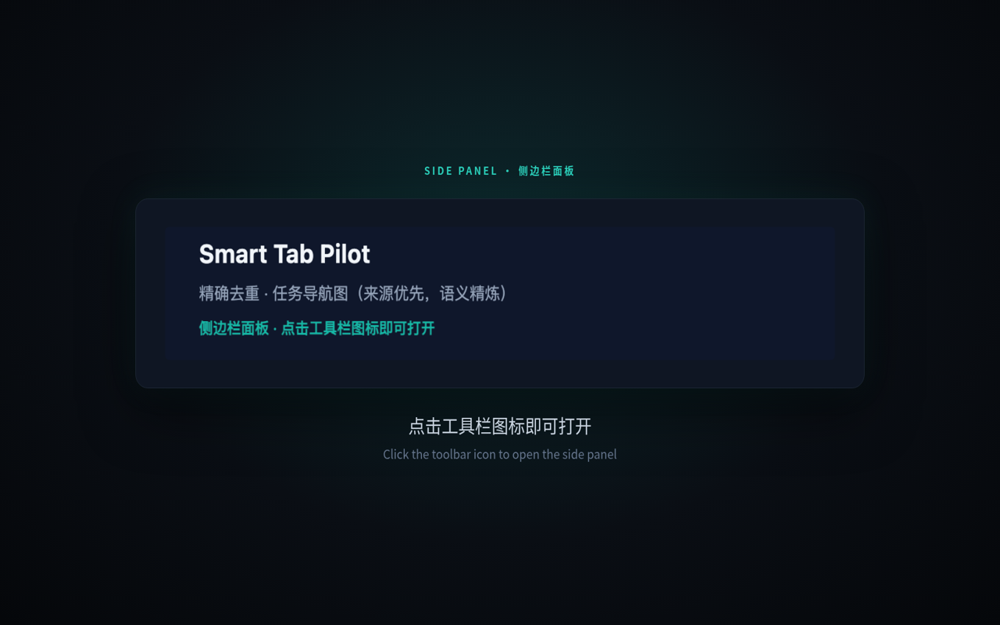

Exact URL dedupe
If the URL is already open in any window, jump there and close the duplicate. Hash is part of the match unless you ignore it.
任一窗口已有相同 URL 时，聚焦已有标签并关掉重复页。默认含 hash。
Exact URL dedupe with a cross-window jump, plus a learnable task navigation graph. Side panel only. Models: on-device Nano → your OpenAI-compatible endpoint → local heuristics.
精确 URL 去重（跨窗口跳转）+ 任务导航图归组。侧边栏操作。模型顺序：设备端 Nano → 自定义 OpenAI 兼容接口 → 启发式。
On the Chrome Web Store now (v1.5.0, listed 2026-11-05). Load unpacked from source remains for developers.
已在 Chrome 网上应用店上架（v1.5.0，2026-11-05）。开发者仍可从源码加载已解压的扩展。
Features
给使用者看的能力，而不是实现细节。
If the URL is already open in any window, jump there and close the duplicate. Hash is part of the match unless you ignore it.
任一窗口已有相同 URL 时，聚焦已有标签并关掉重复页。默认含 hash。
Rules hint (true opener/referrer, project path); the model judges same-task from title + URL + summary. Same window or nearby open time never hard-merges.
规则只出候选，模型根据标题 + URL + 短摘要判断是否同一任务；同窗口或开页时间不会硬合并。
Click the toolbar icon or press Ctrl+Shift+K / ⌘⇧K. No popup.
点击工具栏图标即可占满浏览器侧栏。
Language, Nano, custom model, and toggles sit behind the gear — the task list stays the main surface.
设置是侧栏里的独立页面，不是和任务列表挤在一起。
All windows or current window only — one logical view across monitors. The choice is saved.
一键切换「全部窗口 / 仅当前窗口」。
Drag a task or tab onto another to merge, split it back out, or close a whole logical group.
拖拽合并、拆成独立任务，或关闭本组。
Follow the browser, or lock the UI to Chinese or English.
跟随浏览器，或在设置里锁定语言。
Prefer Gemini Nano on device. Else your OpenAI-compatible Base URL. Else heuristics — the graph still works.
不附带厂商后台；自定义端点完全由你填写。
Models
命名和混杂簇精炼才走模型；分组主路径仍是导航图。
Chrome Prompt API LanguageModel. If the model is downloadable, tap Download / enable Nano in Settings (user gesture required).
Base URL, API key, and model name in chrome.storage.sync. Requests go only to the URL you type.
Title + short summary keywords. No page text leaves the device.
Install
推荐从商店安装。Load unpacked / 源码 ZIP 仅给开发者或无法使用商店的环境。
Public listing v1.5.0 (updated 2026-11-05).
公开发布版本 1.5.0，商店更新日期 2026-11-05。
从包含 manifest.json 的仓库根目录加载已解压的扩展程序。
chrome://extensions.manifest.json (the directory you cloned, e.g. smart-tab-pilot/).Product
商店用产品图，不是模拟界面。

